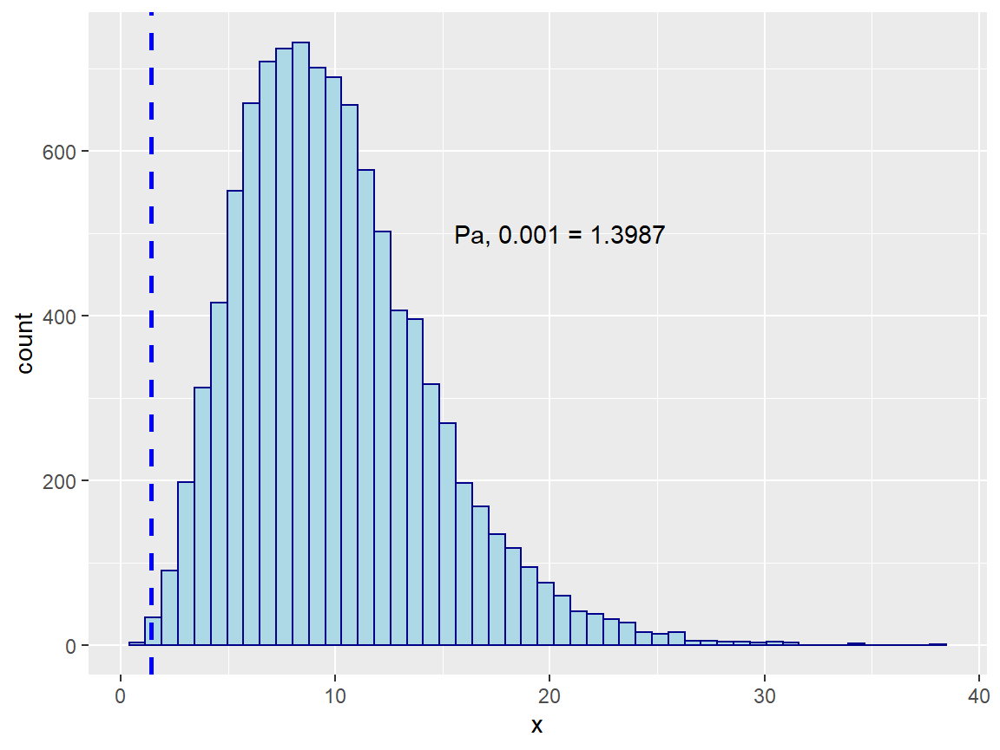
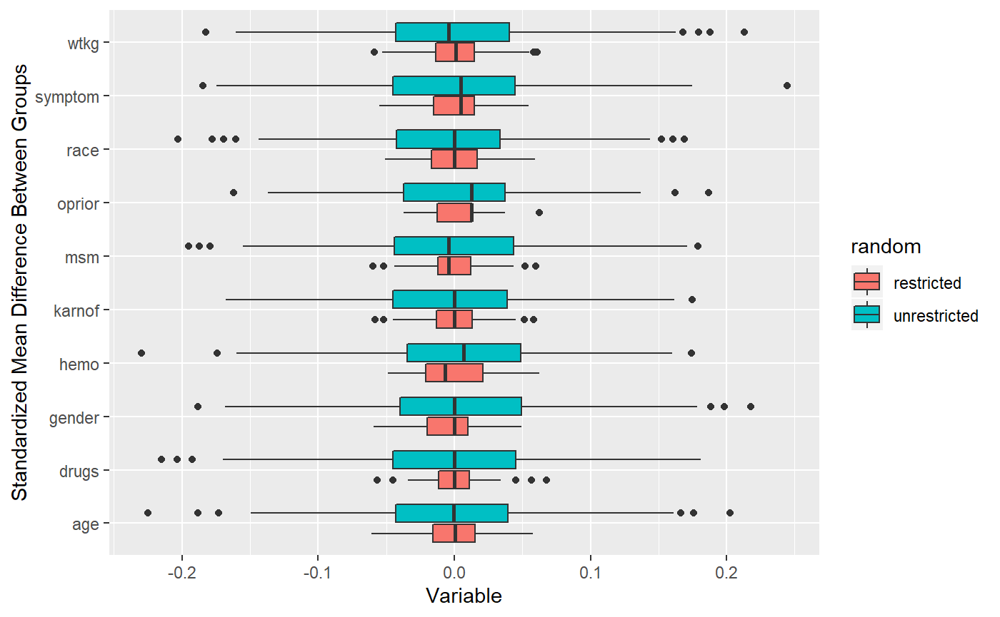

vignettes/02-rerand.Rmd
02-rerand.RmdWelcome to jumble! This program was written as a companion to academic work performed by researchers at Brown University to conduct re-randomization for cluster-randomized nursing home trials.
In this vignette we will explain how to use covariate balance as criteria for re-randomization and introduce the companion functions. The basic procedure outlined by Morgan KL (2015) is as follows:
Select units for the comparison of treatments, and collect covariate data on all units.
Define an explicit criterion for covariate balance.
Randomize units to treatment groups.
Check covariate balance and return to Step 3 if the allocation is unacceptable according to the criterion specified in Step 2; continue until the balance is acceptable.
Conduct the experiment.
Perform inference (using a randomization test that follows exactly steps 2-4).
The example dataset used in this package is freely available and comes from a clinical AIDs trial conducted in the 1990s.(Hammer SM 1996) See: ?jumble::ACTG175
df <- jumble::ACTG175
#Variables for balancing
vars <- c('age', 'race', 'gender', 'symptom', 'wtkg', 'hemo',
'msm', 'drugs', 'karnof', 'oprior')We will use Mahalanobis distance with sample size constant to estimate covariate balance, acceptance probability and identify an acceptable randomization.(Morgan KL 2015)
\[ M \equiv \frac{n_tn_c}n (\bar{X_t} - \bar{X_c}) ' cov(X)^{-1} (\bar{X_t} - \bar{X_c}) \] Where n is the sample size, t treated, c controls, and X represents the covariate means.
The ACT trial was a single randomized trial, here are the observed standardized mean differences in that single randomization (difference in group means / pooled standard deviation).
## [,1]
## arms -1.9991
## age -0.0005
## race 0.0643
## gender -0.0506
## symptom -0.0437
## wtkg 0.0887
## hemo -0.0126
## msm -0.0459
## drugs -0.0639
## karnof -0.0177
## oprior 0.0843## The M-distance for this trial, estimated using patient characteristics is:
## 8.542155But is this a good or bad randomization? How to get some context:
Assuming normality of covariate means, the M statistic is Chi-square distributed with k degrees of freedom corresponding to number of covariates. The alternative is to conduct a randomization test, compute M-distance for each randomization and use the empirical distribution of M to identify an acceptable cut-off.
Using guidance from Morgan & Rubin paper, an acceptance probability of 0.001 is a reasonable starting point.(Morgan KL 2015) This is saying that we would like to find a M-distance cut-off which represents the lower 0.1% of the distribution of M (i.e. the most balanced randomization draws).
## M-distance cut-off using 10 covariates is:
## 1.48Here we perform a Permutation with 10,000 simulations, where randomly assign individuals to treatment group. We then compute the M-statistic and store the value.
Assignment done using rnd_allot function, ?rnd_allot.
permute_m <- function(df, vars, seed) {
set.seed(seed)
id <- 1:nrow(df)
assign <- rnd_allot(id)
df_2 <- df %>%
mutate(arms = assign$group) #fair coin assignment
df_t <- df_2[df_2$arms=='a', vars]
df_c <- df_2[df_2$arms=='b', vars]
ssc <- (nrow(df_c) * nrow(df_t)) / (nrow(bind_rows(df_t, df_c))) # sample size correction
df_cov <- cov(df[, vars])
return(Rfast::mahala(colMeans(df_t), colMeans(df_c), sigma = df_cov) * ssc)
}seed_list <- sample(-10000:10000, 10000) #random seeds
sims <- sapply(seed_list, function(x) permute_m(df, vars, x)) %>%
unlist(.)
We can see from the empirical distribution that M ~ 8 is about average for achieving balance. So the trial had a decent randomization but it could have been better, the empirical distribution suggests an acceptance probability of 0.001 is seen at M values of 1.3987 or lower.
At this point we have completed steps 1-3, we have our entire cohort, a list of covariates, and a defined criterion for accepting a randomization.
Now we must conduct the re-randomization procedure…
rnd_rerand Will execute a single randomization given x and Mahalanobis cutoff.
runs <- 100
library(microbenchmark)
tst_run <- microbenchmark(
rerandomize = rnd_rerand(x = df[, vars],
cutoff = quantile(sims, 0.001)),
times=runs, unit = 's')
avg_run_s<- round(sum(tst_run$time / 10^9) / runs, 3) ## Average runtime in seconds to find 1 acceptable randomization: 1.897A single restricted randomization looks favorable compared with the trial result:
re_rand <- rnd_rerand(x = df[, vars],
cutoff = quantile(sims, 0.001),
seed = as.integer(as.Date('2019-06-28')))Example Table 1. Actual trial randomization
The average standardized mean difference between groups is ~ 0 for the trial and the re-randomizations. This is expected, randomization is designed to achieve a value of zero in the mean difference of covariates between assigned groups, i.e. (T =1 | E[X]) - (T=0 | E[X]) = 0. But what is notable is that re-randomization achieves a significant reduction in the variance! moving from 0.058 to 0.0237, a reduction of 41%.
This reduction in variance is the driver behind re-randomization’s ability to significantly increase study power to detect a difference. As long as the primary outcome is evaluated using a randomization or a ‘permutation’ test which has the same criteria as re-randomization, the test statistic will have more narrow confidence intervals than a comparable test using standard parametric assumptions. Morgan KL (2015)
The trade is computation time, you have to perform ~1000 randomizations to find an acceptable one at Pa =0.0001. But if it takes 1-3 seconds to find an acceptable randomization. It could take you several minutes at least to find enough permutations of those acceptable draws. If each analysis is a complex regression which itself takes several seconds - minutes, you could be waiting a long time….
We can see the how much tighter covariate differences are if we perform a simulation of 1000 randomizations under either strategy.
## [1] "1000 unique randomizations obtained"## [1] TRUE
You can see how much tighter the distributions are for re-randomization!
Refer to the permutation vignette for implications of this randomization strategy in the analysis stage.
Hammer SM, et al. 1996. “A Trial Comparing Nucleoside Monotherapy with Combination Therapy in Hiv-Infected Adults with Cd4 Cell Counts from 200 to 500 Per Cubic Millimeter.” N Eng J M 335: 1081–90.
Morgan KL, Rubin DB. 2015. “Rerandomization to Balance Tiers of Covariates.” J Am Stat Assoc 110 (512): 1412–21.